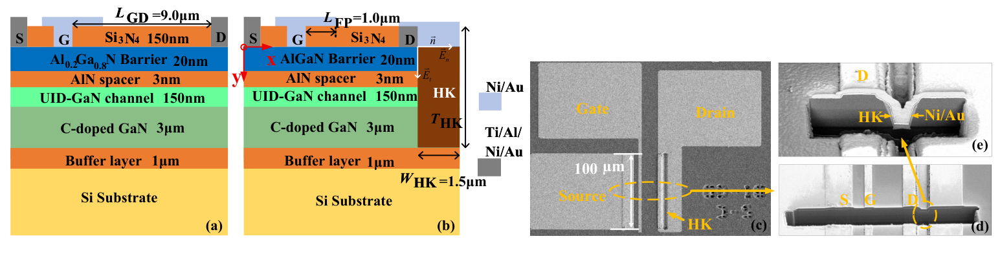
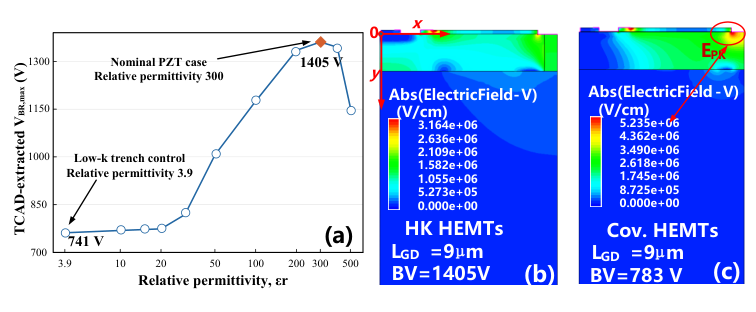

Paper Story · Applied Physics Letters · 2026
High-k trench field engineering in GaN HEMTs
Electric-field redistribution via high-k dielectric trench in GaN-on-Si AlGaN/GaN HEMTs
Applied Physics Letters, 129(17), 173502 (2026)
Research question
Drain-side field crowding limits breakdown in GaN-on-Si HEMTs and can aggravate field-assisted trapping and dynamic ON-resistance degradation.
Core method
A PZT-filled trench is fabricated near the drain. Displacement-field boundary conditions guide the interpretation, while 2D TCAD sweeps relative permittivity from 3.9 to 500. Static and dynamic measurements compare co-fabricated conventional and trench devices.
Method steps
- Drain-side trench
Fabricate a PZT-filled trench in a GaN-on-Si AlGaN/GaN HEMT.
- Boundary analysis
Analyze normal and tangential fields through displacement-field boundary conditions.
- TCAD sweep
Sweep permittivity and inspect 2D electric-field and potential distributions.
- Device measurements
Compare breakdown, static conduction, and dynamic resistance after high-voltage stress.
Main finding
The accepted manuscript reports a breakdown voltage of 1405 V for a representative PZT-trench HEMT and 783 V for a co-fabricated conventional device at a gate-to-drain spacing of 9 µm (abstract and Fig. 3(b)). The TCAD sweep examines redistribution of the drain-side high field.
Figures


Device Structure and Microscopy
Figure 1 · Original Figure 1: conventional and PZT-trench cross sections with microscopy of the fabricated structure.
The drain-side dielectric structure changes the local high-field boundary.
Source: Applied Physics Letters, 129(17), 173502 (2026). Figures from the author-supplied accepted manuscript.
Figure reuse rights pending


Permittivity Sweep and Electric Fields
Figure 2 · Original Figure 2: terminal-voltage metric versus permittivity and fields near each device’s terminal voltage.
The response is nonmonotonic; different terminal biases do not constitute a same-bias field comparison.
Source: Applied Physics Letters, 129(17), 173502 (2026). Figures from the author-supplied accepted manuscript.
Figure reuse rights pending
Why it matters
The study relates dielectric-boundary design to static and dynamic high-voltage behavior through device structures, field analysis, and electrical measurements on co-processed devices.
Scope and conditions
The voltage comparison concerns the representative devices reported in the accepted manuscript. The permittivity sweep uses a two-dimensional electrostatic model. Interpret dynamic on-resistance with the stated stress voltage and extraction delay.